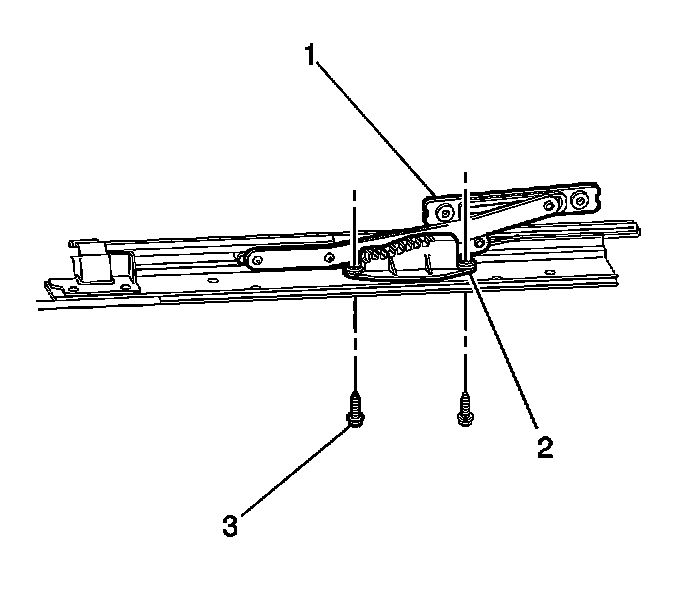

Sunroof / Moonroof Gear Assembly: Service and Repair
Sunroof Cam Assembly Replacement
Removal Procedure

1. It is only necessary to lower the headliner. Only do those step in headliner replacement that will lower the headliner enough to gain access to the part. Refer to Headlining Trim Panel Replacement (Service and Repair) .
2. Remove the rear sunroof window. Refer to Sunroof Window Replacement (Front) (Service and Repair)Sunroof Window Replacement (Rear Vent) (Service and Repair)Sunroof Window Replacement (Center) (Service and Repair)Sunroof Window Replacement (Rear Stationary) (Service and Repair) .
3. Move the rear window to the full vent position.
4. Release the lift arm (1) from the cam assembly.
5. Remove the cam screws (3) and cam assembly (2) from the sunroof frame.
Installation Procedure
1. Position the lift arm pin in the cam assembly slot.
Notice: Refer to Fastener Notice (Fastener Notice) .
2. Install the cam assembly (1) to the sunroof frame with the screws (3).
Tighten the screws to 5 N.m (44 lb in).
3. Move the lift arm to the bottom of the slot in the cam assembly. This will ensure even lifting operation.
4. Install the rear sunroof window. Refer to Sunroof Window Replacement (Front) (Service and Repair)Sunroof Window Replacement (Rear Vent) (Service and Repair)Sunroof Window Replacement (Center) (Service and Repair)Sunroof Window Replacement (Rear Stationary) (Service and Repair) .
5. Install the headliner assembly. Refer to Headlining Trim Panel Replacement (Service and Repair) .